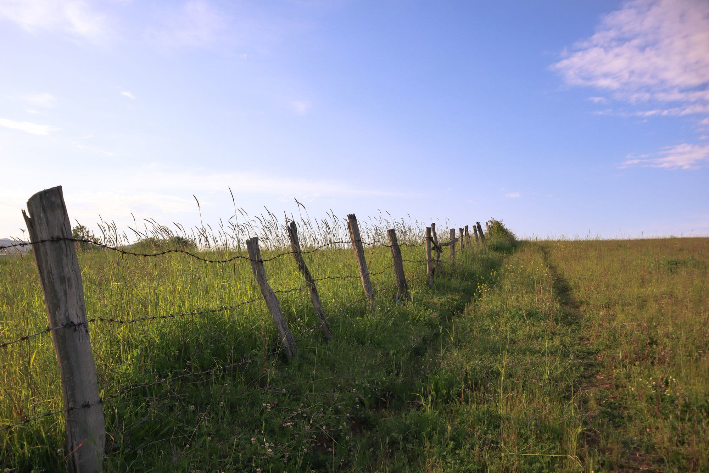

One-eighth share
Ranch Supporter
$899
Approximately 58–67 lb of packaged beef
The smallest way in. Enough beef to see whether this suits how you cook, without clearing out a freezer or committing a large sum.

We raise Black Angus on pasture in Argyle, Texas. You buy a share of one specific animal, follow it through the season, and take the beef home when it is finished.
You don’t just buy beef — you become part of the ranch.
Most beef arrives with no history. You buy a package, and whatever happened before the package is somebody else's business.
This works the other way round. You buy a share of one animal before it is finished, and from that point it is partly yours. You get its ear tag number. You get photos while it is growing. You can drive out and look at it. When it is ready, the beef from your share comes back to you vacuum-sealed and labelled, and you know exactly which animal it came from and which pasture it stood in.
It is a slower way to buy beef and it asks more of you — freezer space, a single payment, and some patience. In exchange you stop guessing.

The difference between them is how much of one animal you own, how much beef comes back, and how much freezer you need to hold it.
One-eighth share
$899
Approximately 58–67 lb of packaged beef
The smallest way in. Enough beef to see whether this suits how you cook, without clearing out a freezer or committing a large sum.
Quarter share
$1,699
Approximately 115–135 lb of packaged beef
The most common size. A quarter covers a family through most of a year without taking over the garage.
Half share
$3,299
Approximately 230–270 lb of packaged beef
Half of one animal. Enough to stop thinking about where beef comes from for a year, and enough involvement that you will know the animal.
Whole animal
$6,199
Approximately 460–540 lb of packaged beef
The whole animal is yours. Nobody else has a claim on any part of it, and the cut sheet is entirely your decision.
Beef weights are approximate and vary with the animal. Prices are per share of one live animal and include processing. Full detail, including an estimator that works out how long each share lasts.
Six steps over a few months. Nothing happens faster than the animal does.
Eighth, quarter, half or whole. If you are not sure, the estimator on the Ownership page will tell you roughly how long each one lasts for a household your size, and how much freezer you need.
Send us an inquiry and we will tell you which animals are available and when they are expected to finish. A deposit holds your share; the balance is due before the animal goes to the processor.
You get a bill of sale for your share of one identified animal, and its ear tag number. From that point it is partly yours, and we are boarding and caring for it on your behalf.
Photos and updates through the season. If you want to come out and see it, say so — that is the point of doing it this way.
A few weeks before the processing date we work through the cut sheet with you: steak thickness, roast sizes, how much goes to ground. The choices trade off against each other and we will walk you through it.
Your beef comes back vacuum-sealed, labelled and frozen, usually two to three weeks after the processing date. Pickup in Argyle, or we deliver in the Dallas – Fort Worth area for half and whole shares.

A few things people find out after they buy a beef share somewhere, which we would rather you knew first.
Between 38% and 50% of any share is ground beef. That is how an animal is built, not how we cut it. Rib and loin steaks are about 16% of the yield. If your household only eats ribeye, buying ribeye will cost you less than a share will.
You need the freezer, and it is not in the price. A half share is eight to ten cubic feet of chest freezer. A whole animal is often two appliances.
It is grain-finished, and for some people that is the wrong answer. Our cattle are raised on grass and finished on grain, which is what lays down the marbling. If what you specifically want is 100% grass-finished beef, this is not that, and we would rather tell you now than at pickup.
It does not beat the grocery store on price. Supermarket ground beef averaged $6.79 a pound in September 2026. A share here works out between $12.40 and $14.40 a pound depending on size. You are paying for a known animal, not a cheaper one.
Three parts, and only one of them is a win for us. We would rather give you all three than the one.
Your ground beef comes from your animal and no other one. Commercial ground beef is made by combining trim from many carcasses, and a single batch can contain meat from several hundred different cattle. Ours is one animal, with a tag number, that stood in a field you can drive to. You will also know the date it was processed, which nobody behind a supermarket counter can tell you.
Safety. We are not going to tell you shop beef is full of preservatives, because it is not, or that ours passes more checks, because it does not. Beef sold in a shop is USDA-inspected. Ours is processed under the Texas custom exemption, which means it is inspected less, not more. That is a real trade, and you should make it knowingly rather than because a website flattered you.
Freshness. Ours is cut, sealed and frozen within days of the processing date. Supermarket beef is chilled and has usually sat in vacuum for weeks. Those are different things, not better and worse things, and anyone selling you hard on this one is overreaching.
A share of one live Black Angus animal, raised here in Argyle. You are not buying meat by the pound. You get a bill of sale for your share before the animal is harvested, and once it is processed, the beef from your share is yours. This is how the law works for a ranch our size, and it is also simply a more honest description of what is happening.
It depends on the animal. Ours finish at around 1,300 lb live, which comes back as roughly 460 to 540 lb of packaged beef for a whole animal — so about 230 to 270 lb for a half, 115 to 135 lb for a quarter, and 58 to 67 lb for an eighth. We publish ranges rather than one number because the real figure depends on the individual animal, and we would rather under-promise it.
A live animal is not all beef. Roughly 62% of live weight comes off the rail as a hanging carcass, and roughly 62% of that becomes packaged, take-home cuts — the rest is bone, fat and trim. So a 1,300 lb animal comes back as somewhere near 500 lb of boxed beef, not 1,300. Those ratios are ordinary and they are the same at every ranch. The only reason the number surprises people is that nobody usually tells them.
Between 38% and 50%. That is true of every beef share anywhere; it is simply how an animal is built. The rib and loin steaks everyone pictures are about 16% of the yield. If your household only eats ribeye and filet, buying those cuts individually will cost you less than a share will.
Roughly one cubic foot for every 25 to 35 lb of packaged beef. An eighth needs about 2 to 2.5 cu ft and will fit in an empty kitchen freezer. A quarter needs 4 to 7, a half needs 8 to 10 in a chest freezer, and a whole animal needs 15 to 20 and often two appliances. A freezer is a real cost that is not in the share price, so factor it in.
Steaks and roasts hold excellent quality for about 4 to 12 months at 0°F, and ground beef for 3 to 4. Food held constantly at 0°F is safe indefinitely — those are quality guidelines, not safety limits. Vacuum-sealed beef holds at the long end of the range. Practically: plan to eat a half share inside a year.
You can buy a share without ever driving out here, but most people want to see it first, and that is a reasonable thing to want. Call or send a note and we will find a time.
Direct
Argyle, Texas — about 30 minutes from Denton and 40 from Fort Worth.